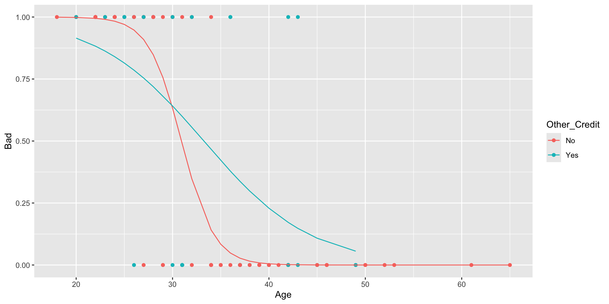

Data Science for Business Applications
Interactions in Logistic Regression Models
A bank that extends lines of credit has a sample of 100 customers with information about whether each customer’s loan account is in good standing, along with information about each customer:
- Status: Good or Bad depending on whether the account is in good standing
Age: The age of the customer
- Dependents: The number of children the customer has
- Sex: The sex of the customer
- Job_Years: How many years the customer has held their current job
- Home_Years: How many years the customer has lived in their current home
Other_Credit: Whether the customer has any other lines of credit, (Yes,No)
Predicting bad status
The bank is looking to build a model to predict Status, because they would like to be able to predict which future customers are most likely to later have accounts in bad standing (so they can avoid approving those customers for lines of credit!).
Status is a categorical variable - transform it into a dummy variable by creating a new variable Bad that is 1 if Status is
Badand 0 if Status isGood.
- Why 1 for
Bad? It doesn’t really matter, but does make sense here because the bank is looking to predict which customers will later have accounts in bad standing.
The logistic regression model
- We’ll use two variables for predicting the status,
AgeandOther_Credit. - The two variables are added as an interaction: \[
\log\left(\frac{p(\text{Bad})}{1-p(\text{Bad})}\right) = \beta_0 + \beta_1 \text{Age} + \beta_2 \text{Other_Credit} + \beta_3 \text{Age} \times \text{Other_Credit}
\] where odds of having a
Badstatus is defined as \[ \text{odds}(\text{Bad}) = \frac{p(\text{Bad})}{1-p(\text{Bad})}, \]
and where \(p(\text{Bad})\) is probability of having a Bad status.
Run the model in R
Call:
glm(formula = Bad ~ Age * Other_Credit, family = "binomial",
data = banco)
Coefficients:
Estimate Std. Error z value Pr(>|z|)
(Intercept) 18.1579 4.8547 3.740 0.000184 ***
Age -0.5871 0.1586 -3.701 0.000215 ***
Other_CreditYes -12.1921 5.2995 -2.301 0.021414 *
Age:Other_CreditYes 0.4076 0.1712 2.382 0.017241 *
---
Signif. codes: 0 '***' 0.001 '**' 0.01 '*' 0.05 '.' 0.1 ' ' 1
(Dispersion parameter for binomial family taken to be 1)
Null deviance: 138.63 on 99 degrees of freedom
Residual deviance: 62.96 on 96 degrees of freedom
AIC: 70.96
Number of Fisher Scoring iterations: 7Interpreting the model
We have the following equation for predicting the log odds of having a Bad status:
\[ \log\left(\frac{p(\text{Bad})}{1-p(\text{Bad})}\right) = 18.16 -0.59 \cdot \text{Age} -12.1921\cdot \text{Other_Credit(Yes)} + \\ 0.4076 \cdot \text{Age} \times \text{Other_Credit(Yes)} \] The odds model is given by \[ \text{odds}(\text{Bad}) = \frac{p(\text{Bad})}{1-p(\text{Bad})} = \exp(18.16 -0.59 \cdot \text{Age} -12.19\cdot \text{Other_Credit(Yes)} + \\ 0.41 \cdot \text{Age} \times \text{Other_Credit(Yes)}) \] Next, we give the interpretation of these coefficients.
Intercept: Setting
Age = 0, andOther_Credit(No) = 0(baseline), results in \(\log(\text{odds}) = 18.16\). Thus, the odds of having a bad status under these conditions are \(\text{odds} = \exp(18.16) = 77,052,688\). This result has no practical meaning since we cannot have bank account holders with zero age.Age: To interpret the effect of
Agealone, we have to setOther_Credit(No) = 0. Thus, for a one unit change inAge(for each year the account holder gets older), there will be a 44.56% decrease (\((\exp(-0.59)-1)\cdot 100 = -44.56\)) in the odds of having a bad status when the account holder doesn’t have other credit.Other_Credit: When
Age = 0, the additional effect of having other credit,Other_Credit(No) = 1, compared to account members without other credit (baseline) is \((\exp(-12.19)-1)\cdot100 = -99\). Or a 99% decrease in the odds of having a bad status compared to account holders that have zero credit with zeroAge.Age\(\times\)Other_Credit: For a unit increase in
Agethere will be an extra increase in the odds of having aBadstatus among account members with other credit of about \((\exp(0.41)-1)\cot 100 = 50.68\), or 50.68%, compared to account members without other credit.
In total, the effect for one unit increase in
Agefor account holders with other credit is given by \((\exp(-0.59+0.41)-1)\cdot100 = -16.47\), or a decrease of 16.43% on the odds of having aBadcredit compared to account holders without other credit.This, in turn, means that the rate of decrease in the odds of having bad credit with an increase in age is greater for account holders without other credit compared to those who do have other credit.
As with the linear model we end up with two models. One odds model for account holders with other credit
Other_Credit(Yes)= 1.
\[
\text{odds}(\text{Bad}) = \exp(5.97 -0.18 \cdot \text{Age})
\] and when Other_Credit(Yes) = 0 (no other credit) \[
\text{odds}(\text{Bad}) = \exp(18.16 -0.59 \cdot \text{Age})
\]
Visualizing the model
Making predictions
Suppose we have a new account from which we don’t know the status. The only information we have is the account member’s age,
Age = 35, and that this person has another credit. What are the predicted log odds, odds, and probability of this person having a bad status?Predicted log odds:
\[ \log\left(\text{odds}(\text{Bad})\right) = 5.97 -0.18 \cdot 35 = -0.33 \] - Using the predict function:
- The difference in this case is due to the rounding on the coefficients of the equation.
- Predicted odds:
\[ \text{odds}(\text{Bad}) = \exp(5.97 -0.18 \cdot 35) = 0.72 \] - Using the predict function:
- In this case the odds are smaller than one, which indicates that the odds are not in favor of the group of interest (having a bad status) but on the base group, which is having a bad status. Thus, it is more likely that a person with this age and credit condition does not have a bad status compared to having good credit.
- Predicted Probabily of having a bad status: \[ p(\text{Bad}) = \frac{\exp(5.97 -0.18 \cdot 35)}{1+\exp(5.97 -0.18 \cdot 35)} = 0.42 \]
The predicted the probability of account holder with 35 years of age having a
Badstatus is 0.42, or around 42%.How do we know if this model is effective at making predictions in this case, since we don’t have access to common measures used for this goal, as the RSE, \(R^2\), and the RMSE?
Measuring the model’s Accuracy
- First we obtain the predictions (classification) given the predicted probabilities
- We’ll use a threshold of 0.5 for the classification
- We next obtain the ``confusion Matrix’’:
First we obtain the TP, TN, FP, and FN
- (TP) True positives: 43
- (TN) True negatives: 41
- (FP) False positives: 9
- (FN) False Negatives: 7
The accuracy is given by: \[ \frac{\text{(TP+TN)}}{\text{Total}} = \frac{43+41}{100} = 0.86 \]
We evaluate the accuracy from this model by comparing it’s accuracy to the ``no brainer’’ method:
There’s an increase in the accuracy of 86% from the 50% from the group that is the most common on
Status. In this case, either group is valid.To measure the model’s accuracy on out sample data, methods we can use cross validation.